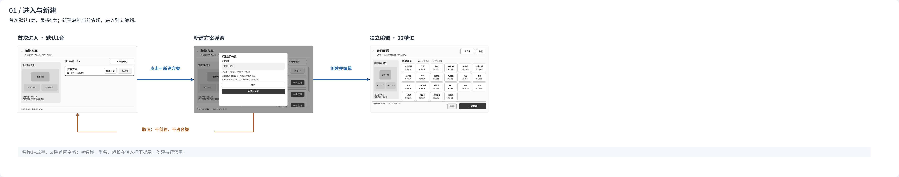
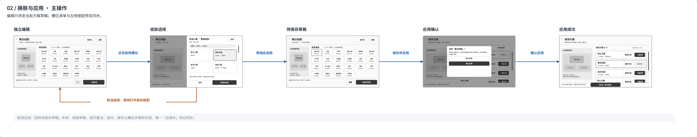
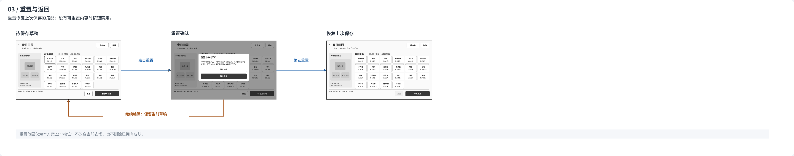
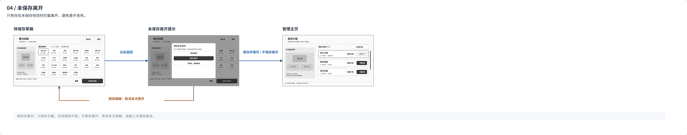
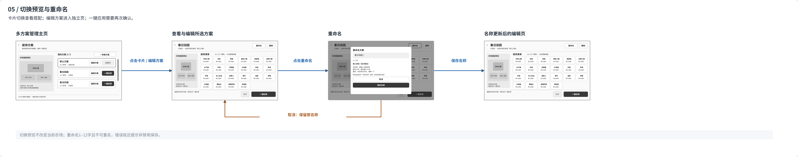
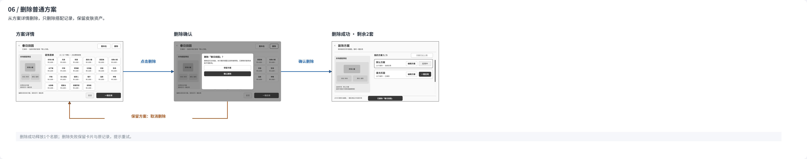
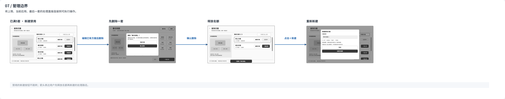
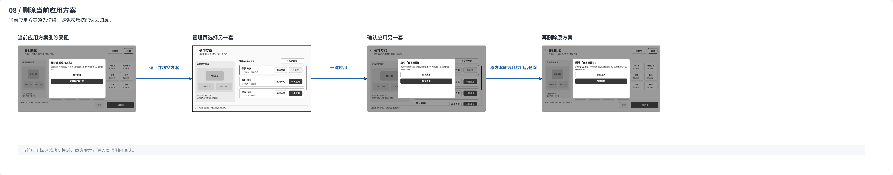
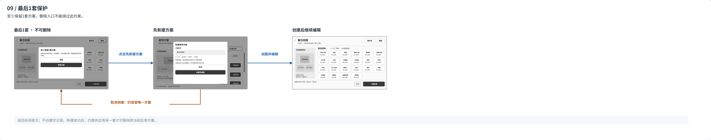
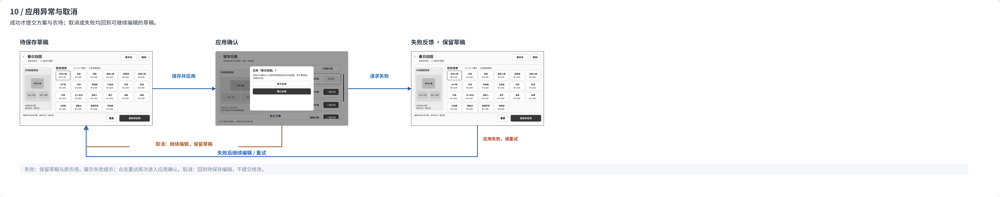

卡片列表 + 独立编辑页
元梦之星 · 方案 A
DREAM FARM / PLAN A
先组织搭配，再逐项换肤；通过明确的保存与应用步骤管理农场装饰。

01 / 进入与新建
02 / 换肤与应用 · 主操作

03 / 重置与返回

04 / 未保存离开

05 / 切换预览与重命名

06 / 删除普通方案

07 / 管理边界

08 / 删除当前应用方案

09 / 最后1套保护

10 / 应用异常与取消
